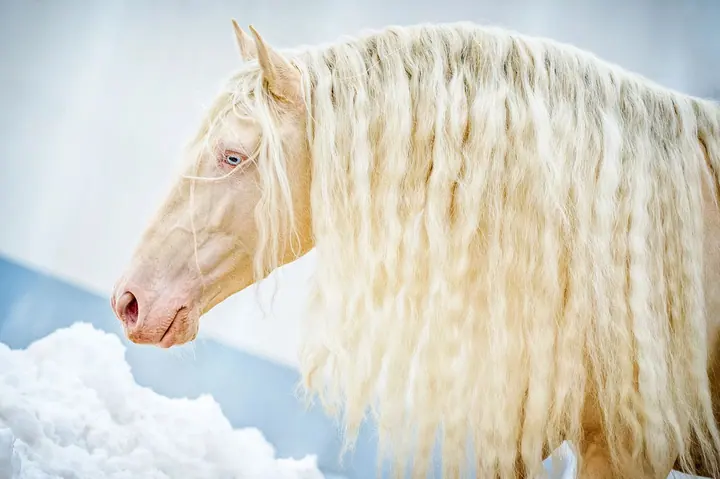
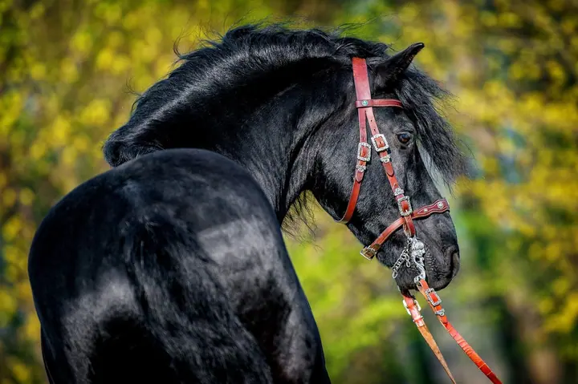
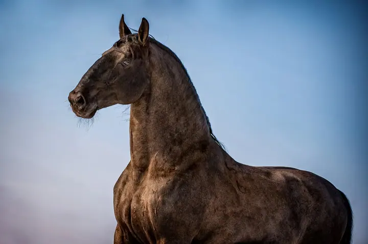
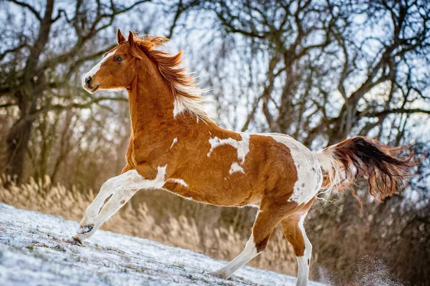
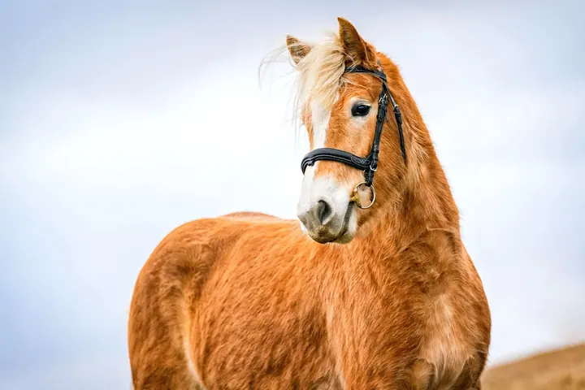
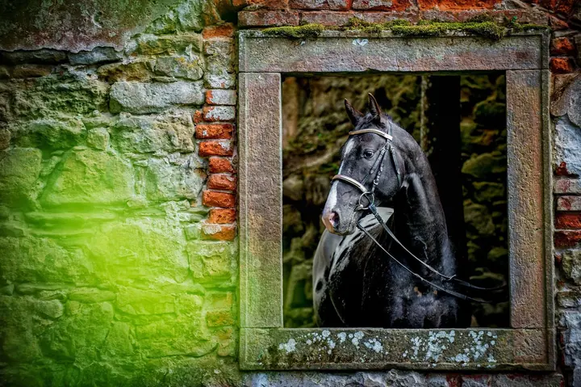
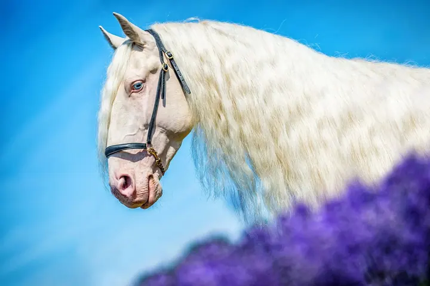
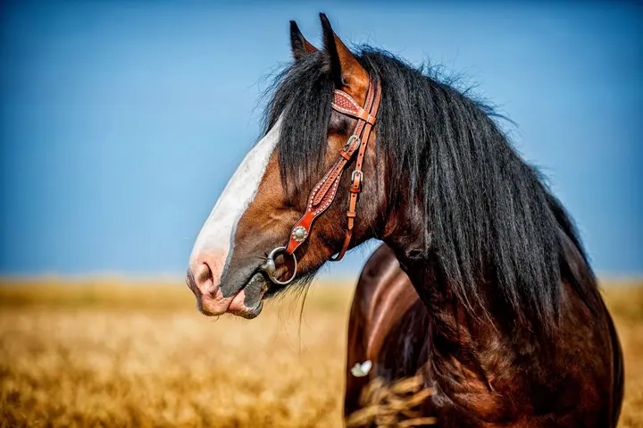
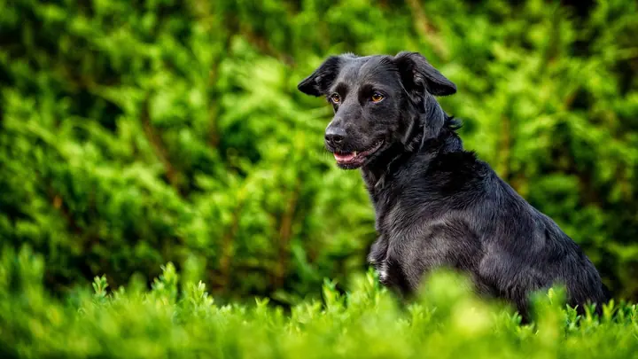

01 / 04
Focení koní
Nejraději fotím koňské portréty v prostředí, které ladí s povahou koně. Ráda fotím koně s neobvyklým zbarvením srsti a dlouhou vlající hřívou. Na fotkách můžete být i vy, majitelé.
Zeptat se na termín→








Koňské portréty plné energie a ladnosti
Zeptat se na termín →(01) Ahoj
Jmenuji se Martina Burianová a fotografování koní se věnuji od roku 2010. Fotím také psy v ateliéru i venku a ráda vyrážím za koňmi po Evropě i do Ameriky.
(02) Co fotím
01 / 04
Nejraději fotím koňské portréty v prostředí, které ladí s povahou koně. Ráda fotím koně s neobvyklým zbarvením srsti a dlouhou vlající hřívou. Na fotkách můžete být i vy, majitelé.
Zeptat se na termín→02 / 04
Vašeho psa vyfotím venku, v přírodě a v prostředí, kde se cítí dobře a může se ukázat takový, jaký je.
Zeptat se na termín→(04) Postup
Od první zprávy po hotovou galerii.
Krok 1 z 4
V e-shopu si objednáte poukaz na focení a pak si spolu domluvíme termín setkání.
Krok 2 z 4
Koně fotím ve stáji nebo v okolí, kde to zná. Hledáme prostředí, které k jeho povaze sedí. Psy fotím venku nebo v jednom z ateliérů.
Krok 3 z 4
Při focení dávám zvířeti prostor, aby se mohlo předvést naplno. Klidně se k němu přidejte i vy nebo celá rodina.
Krok 4 z 4
Z focení vyberu nejlepší snímky, pečlivě je upravím a pošlu vám hotovou sadu fotografií.
Dávám koním prostor předvést se naplno.
(05) Za objektivem
Koně fotím od roku 2010. Tehdy jsem se poprvé rozhodla zachytit koňskou krásu v celé její vznešenosti a ladnosti a už mě to nepustilo. Nejblíž k srdci mám koňské portréty v prostředí, které k povaze daného koně sedí. Ráda fotím koně s neobvyklým zbarvením srsti a koně s dlouhými vlajícími hřívami.
K fotografování jsem se dostala z kariéry projektové manažerky. Dnes jezdím za koňmi do soukromých stájí po celé republice, za kolegyněmi fotografkami do Národního hřebčína v Kladrubech nad Labem a za oblíbenými stájemi do Španělska. Několikrát jsem fotila i Snow Polo ve švýcarském St. Moritzi.
Kromě koní fotím psy v exteriéru i v ateliérech v Brně, v Holovousích a na Kladně, a když je čas, tak i letadla. O své cestě ke zvířatům jsem mluvila v podcastu Rádia Junior a v rozhovorech pro iDnes, Psínovinky.cz a positivCZ.
Martina
Martina Burianová · Fotografka koní a psů
Poukaz na focení koní stojí 2 000 Kč a najdete ho v mém e-shopu. Focení zvířat začíná na 2 000 Kč.
Ano, koně fotím přímo v jejich stájích. Za koňmi jezdím po celé republice, z Vysočiny až do Plzeňského kraje.
Psy fotím venku v exteriéru nebo v ateliéru. Ateliéry mám k dispozici v Brně, v Holovousích a na Kladně.
Určitě. Často fotím majitelky s jejich koněm a někdy přijde i celá rodina. Společné fotky jsou krásná vzpomínka.
(07) Kontakt
Napište pár vět o tom, co si představujete, a termín, který se vám hodí.